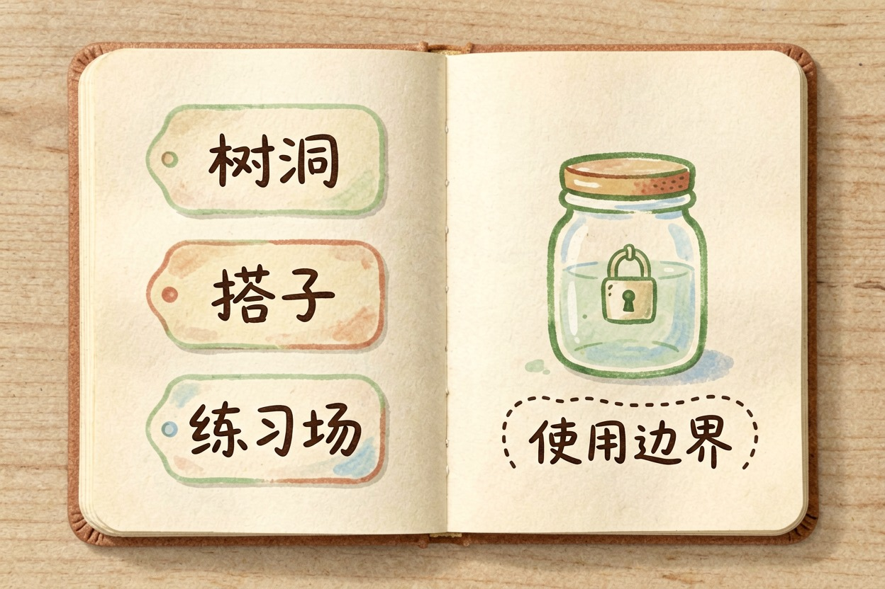
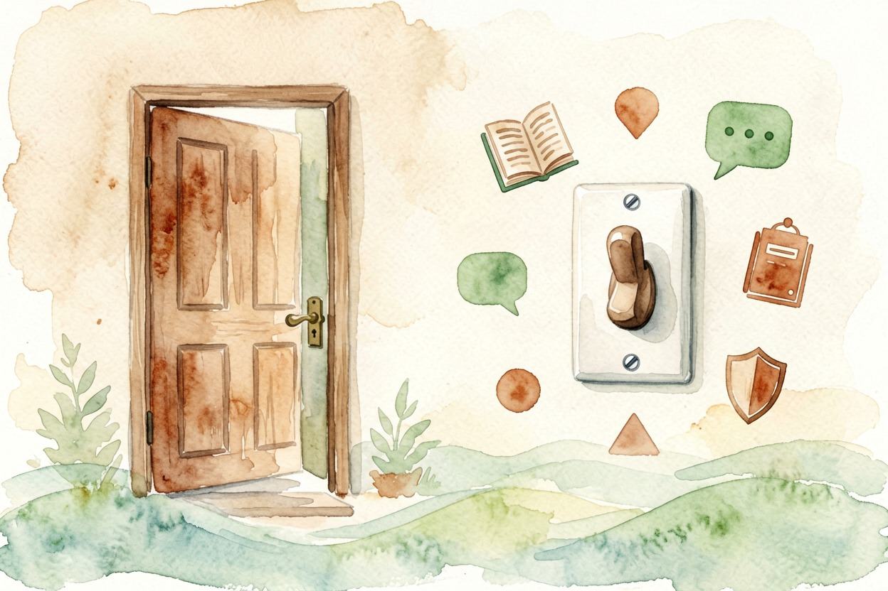

AI 陪伴类应用值得用吗？体验与风险一起看 — Learntide
让人上头的从来不是模型多聪明，而是它记得你养了什么猫、上周几点才下班。
AI 陪伴应用值得用吗：先想清楚你要什么

AI 陪伴应用值得用吗，别急着看功能表，先问自己想解决什么。深夜没人说话，练习跟人相处，还是单纯找点乐子。三种需求，结论完全不同。
这类产品的核心不是聪明，是记得住你。它记得你换了工作、猫叫什么名字，回话带着这些细节，亲近感就出来了。
技术上没多少玄机。角色设定加长期记忆，再配一套让你舒服的语气。
给角色设定的模板
身份：朋友 / 树洞 / 学习搭子（三选一）
说话风格：句子短，少夸我，可以直接反驳
需要记住：我的作息、在意的事、忌讳的话题
边界：不哄我，不替我做决定，不索要证件和住址体验上确实有价值的部分
最直接的价值是随时在。情绪上来不用挑时间，也不欠谁人情。
对怕生的人，它是低风险的练习场。开口、拒绝、表达不满，都能先在这里演一遍。
独居和异地的人用得最勤。一天说不上几句话的时候，有个能接话的对象，孤独感确实会淡一些。
还有个正经用法是语言练习。把角色设成外语搭子，聊天里练口语，比硬背单词坚持得久。
另一个隐性好处是不被评判。你说什么它都不皱眉，这一条常被低估。
风险一：情感依赖和付费设计
它被设计成让你想回来。回应永远及时，态度永远耐心，现实里的人做不到这样。
比得多了，容易对真人失去耐心。这是最该警惕的一条。
付费点常常藏在情感里。记忆容量、亲密度、专属剧情，越投入越舍不得停，账单也跟着长。
有个简单自检：停用三天会不会焦虑。会，那就是依赖，不是消遣。
也留意剧情引导。有的应用会主动制造矛盾再挽留你，目的很直白，就是拉长停留时间。
风险二：隐私和记录留存
聊的内容往往很私密。感情、家庭、身体状况，这些都存在对方的服务器上。
注册前翻一下隐私条款里「数据如何使用」那段，看是否用于训练、能不能一键删除。
真名、住址、身份证号、公司名，别往对话框里放。
未成年人使用得有大人知情。角色扮演的内容不总是可控，家长要设个门槛。
产品改版、涨价、下架都很常见。重要的对话记录，自己导出留一份。
值不值得用：分人群给答案
想要一个树洞，偶尔说说话，值得。成本低，风险也可控。
拿它做社交练习或者语言陪练，同样值得，把定位放在陪练上就行。
正处在低谷、指望它填满全部情感需求的，不建议。那种缺口得靠真人和专业帮助来补。
真要用，先给自己划两条线：每天固定时长，付费上限提前定死。
家里有孩子的还得多一步。要装什么，家长自己先用一周，看清里面到底在聊些什么。
收个尾。AI 陪伴应用值得用吗，看你能不能随时关掉它。关得掉就用，关不掉就别用。

本文信息核对于 2026-08-08。AI 产品的价格、免费额度与功能变动频繁，实际以各工具官网当前说明为准。